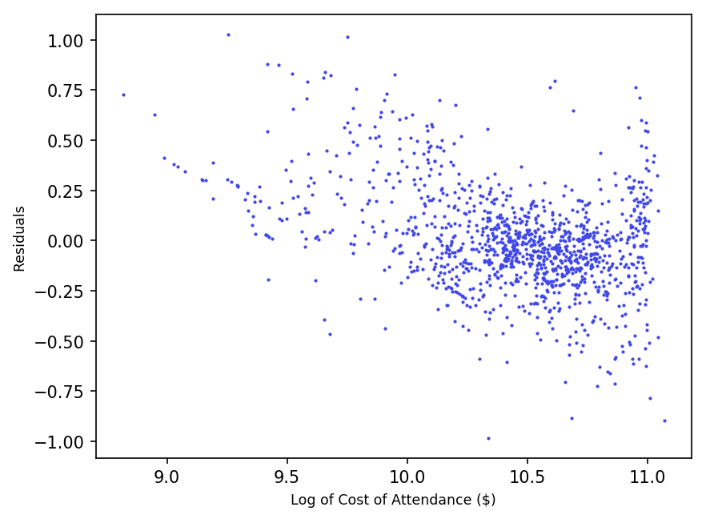

As a soon-to-be college freshman (hopefully!), I've been spending a fair share of my time scouring university websites, scanning colorful pamphlets, and making big decisions. When I stumbled upon the US College Scorecard, I knew I had found my goldmine. This data, collected and compiled by the US Department of Education, is an extremely comprehensive and well-documented dataset freely available to the public. It contains information on colleges, their student body, cost of attendance, financial aid, and earnings after graduation.
At first I tried to work through the raw downloaded data, but it became evident very quickly that this was too big of a dataset to handle. Luckily, an API is also provided, which can return only the results of specific queries. This API returns only a hundred data points per query. Below is a scatterplot I made, with the top 100 data points sorted by descending earnings after graduation, using D3.
D3 is SVG-based, so performance is directly proportional to the number of elements (and in this case, data points) generated. This means that in order to harness the full potential of this dataset, I had to change my method. I decided to try working with Pandas, a data-handling library for Python.
import pandas as pd
from pandas.io.json import json_normalize as jn
import requests
import json
import math
import matplotlib.pyplot as plt
#get data through API in order to compute the number of iterations necessary
url = "https://api.data.gov/ed/collegescorecard/v1/schools.json?api_key=3hZTlIbHmdMRcRWJ3NxdG8AvQPoW4Mdbilkm13At&school.operating=1&_sort=2013.earnings.10_yrs_after_entry.working_not_enrolled.mean_earnings:desc&_per_page=1&_page= %s &2013.earnings.10_yrs_after_entry.working_not_enrolled.mean_earnings__range=0..&2013.cost.attendance.academic_year__range=0..&fields=school.name"%(0)
print("retrieving data count...")
j = json.loads(requests.get(url).text)
count = int(math.ceil(j["metadata"]["total"]/100))
#loop through the same API request, incrementing page number each time
sc = []
for x in range(0,count):
url = "https://api.data.gov/ed/collegescorecard/v1/schools.json?api_key=3hZTlIbHmdMRcRWJ3NxdG8AvQPoW4Mdbilkm13At&school.operating=1&_sort=2013.earnings.10_yrs_after_entry.working_not_enrolled.mean_earnings:desc&_per_page=100&_page= %s &2013.earnings.10_yrs_after_entry.working_not_enrolled.mean_earnings__range=0..&2013.cost.attendance.academic_year__range=0..&fields=school.name,2013.earnings.10_yrs_after_entry.working_not_enrolled.mean_earnings,2013.cost.attendance.academic_year,2013.admissions.admission_rate.overall,2013.admissions.sat_scores.average.overall,2013.aid.median_debt.number.overall,2013.student.retention_rate.four_year.full_time"%(x)
print("retrieving data points %s to %s..."%(x*100,(x*100)+100))
j = json.loads(requests.get(url).text)
df = jn(j,"results")
sc.append(df)
#concatenate each retreived dataset into a single Pandas DataFrame and save to file
sc = pd.concat(sc, axis=0)
print("reassigning index...")
sc.reset_index(inplace=True)
sc.to_pickle("data.pkl")
print("saved to file!")
The above script retrieves all of the data from the API and saves it into an external file. Next, I took this data and made a picture with matplotlib.

Statsmodels has a handy OLS (ordinary least squares) regression calculator, so it told me the R-squared value, 84.9%. This value, coupled with the clearly exponential shape of the scatterplot, led me to believe that the data needed to be re-expressed to fit a linear regression.
OLS Regression Results
==============================================================================
Dep. Variable: cost R-squared: 0.849
Model: OLS Adj. R-squared: 0.849
Method: Least Squares F-statistic: 1.908e+04
Date: Sun, 22 Oct 2017 Prob (F-statistic): 0.00
Time: 12:00:41 Log-Likelihood: -36217.
No. Observations: 3384 AIC: 7.244e+04
Df Residuals: 3383 BIC: 7.244e+04
Df Model: 1
Covariance Type: nonrobust
==============================================================================
coef std err t P>|t| [0.025 0.975]
------------------------------------------------------------------------------
earnings 0.6017 0.004 138.131 0.000 0.593 0.610
==============================================================================
Omnibus: 120.566 Durbin-Watson: 1.770
Prob(Omnibus): 0.000 Jarque-Bera (JB): 133.290
Skew: 0.486 Prob(JB): 1.14e-29
Kurtosis: 2.967 Cond. No. 1.00
==============================================================================
But first, before any re-expression, I figured it would be useful to draw a linear regression line on the scatterplot. It was really easy to convert the formulas we used in class into code:
r = math.sqrt(model.rsquared)
sx = x.std()
sy = y.std()
xbar = x.mean()
ybar = y.mean()
b1 = r * (sy / sx)
b0 = ybar - (b1 * xbar)
def regressionLine(x):
return b0 + (b1 * x)
#later...
plt.plot(x, regressionLine(x), c='green', aa=True)
Here's a summary of the above variables along with this regression line. $$r: 0.92 $$ $$X_s: 12997.65$$ $$Y_s: 13047.42$$ $$\overline x: 24484.86$$ $$\overline y: 40402.45$$ $$b_1: 0.93$$ $$b_0: 17750.13$$ $$\widehat{earnings} = 17750.13 + 0.93(cost)$$
I ended up taking the log of both variables to re-express my data. This gave me a much better result than before, although still somewhat curved.
OLS Regression Results
==============================================================================
Dep. Variable: costlog R-squared: 0.998
Model: OLS Adj. R-squared: 0.998
Method: Least Squares F-statistic: 1.632e+06
Date: Sun, 22 Oct 2017 Prob (F-statistic): 0.00
Time: 13:27:34 Log-Likelihood: -2129.5
No. Observations: 3384 AIC: 4261.
Df Residuals: 3383 BIC: 4267.
Df Model: 1
Covariance Type: nonrobust
===============================================================================
coef std err t P>|t| [0.025 0.975]
-------------------------------------------------------------------------------
earningslog 0.9438 0.001 1277.501 0.000 0.942 0.945
==============================================================================
Omnibus: 280.598 Durbin-Watson: 1.717
Prob(Omnibus): 0.000 Jarque-Bera (JB): 90.181
Skew: -0.032 Prob(JB): 2.62e-20
Kurtosis: 2.203 Cond. No. 1.00
==============================================================================
$$r: 0.99 $$ $$X_s: 0.53$$ $$Y_s: 0.30$$ $$\overline x: 9.97$$ $$\overline y: 10.56$$ $$b_1: 0.56$$ $$b_0: 4.97$$ $$\widehat{\text{log}(earnings)} = 4.97 + 0.56(\text{log}(cost))$$ With this new graph, however, I noticed that the data seemed to be in two distinct clusters.
My first hunch was to separate out schools by ownership (public, private).
So I went back into my get.py and retrieved the data with that additional field.
Then I color-coded the scatterplot. Red = public, Green = Private For-profit, Blue = Private Not-for-profit.
This shows that there are clear differences in each of the groups, and separating them out into their own individual plots could be insightful.
Now that they are isolated, the data can be re-expressed once again to better fit a linear model.
To see what the data looks like, I decided to plot the residuals.
def getRegression(x,y):
b = makeRegression(x,y) #makeRegression returns an array consisting of [b0,b1]
return b[0] + (b[1] * x)
def plotResid(x,y):
plt.scatter(x,getResid(x,y),1,c=darkblue)
plt.ylabel('Residuals')
plt.savefig('generated plots/resid2.png', dpi=150, bbox_inches='tight')
Here are the residuals for the private non profit schools:
clean.py
import pandas as pd
import matplotlib.pyplot as plt
from pandas.core import datetools
import statsmodels.api as sm
import math
sc = pd.read_pickle('data.pkl')
print(sc.columns)
sc.columns = ['index','admitrate','satscores','mediandebt','cost','earnings','retention','schoolname','ownership']
sc.dropna()
sc['costsqrt'] = sc['cost'].apply(lambda x:
math.sqrt(x)
)
sc['logcostsq'] = sc['cost'].apply(lambda x:
math.log(x*x)
)
sc['costlog'] = sc['cost'].apply(lambda x:
math.log(x)
)
sc['earningslog'] = sc['earnings'].apply(lambda x:
math.log(x)
)
darkblue='#4148e8'
lightblue='#6f63f2'
red='#ec5237'
green='#43d1cd'
colors = {1:red,2:lightblue,3:green}
def makeRegression(x,y):
model = sm.OLS(x,y,missing='drop')
model = model.fit()
print(model.summary())
r = math.sqrt(model.rsquared)
sx = x.std()
sy = y.std()
xbar = x.mean()
ybar = y.mean()
b1 = r * (sy / sx)
b0 = ybar - (b1 * xbar)
return [b0,b1]
def getRegression(x,y):
b = makeRegression(x,y)
return b[0] + (b[1] * x)
def getResid(x,y):
return y - getRegression(x,y)
def makeScatterPlot(x,y,lineBool,xTitle,yTitle,groupBool): #explanatory and response must be column names
if (groupBool):
plt.scatter(x,y,1,c=sc['ownership'].apply(lambda x: colors[x]))
else:
plt.scatter(x,y,1,darkblue)
if (lineBool):
plt.plot(x, getRegression(x,y), c='#079799', aa=True)
plt.xlabel(xTitle, size='smaller')
plt.ylabel(yTitle, size='smaller')
plt.title('Cost vs Earnings in US Higher Ed Institutions (Private For-profit)', size='smaller')
plt.savefig('generated plots/test2.png', dpi=150, bbox_inches='tight')
def plotResid(x,y):
plt.scatter(x,getResid(x,y),1,c=darkblue)
plt.ylabel('Residuals')
plt.savefig('generated plots/resid2.png', dpi=150, bbox_inches='tight')